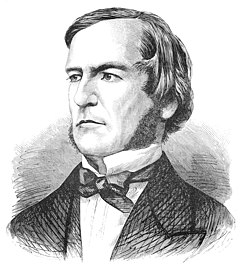

El Álgebra de Boole es un sistema matemático desarrollado por George Boole en el siglo XIX. Boole publicó su obra fundamental "An Investigation of the Laws of Thought, on Which are Founded the Mathematical Theories of Logic and Probabilities" (Investigación de las Leyes del Pensamiento, en las cuales se Fundamentan las Teorías Matemáticas de la Lógica y las Probabilidades) en 1854.
George Boole propuso un sistema algebraico que permitía expresar relaciones lógicas y proposiciones utilizando símbolos y operaciones matemáticas. En lugar de trabajar con números, Boole utilizó variables lógicas que podían tener dos valores: verdadero (1) o falso (0). Introdujo operaciones lógicas como la conjunción (AND), la disyunción (OR) y la negación (NOT), las cuales permitían manipular y analizar afirmaciones y proposiciones en un contexto lógico.
El Álgebra de Boole se convirtió en la base para el diseño y análisis de circuitos digitales, sistemas de control y programación de computadoras. Su trabajo sentó las bases para la teoría de la computación y fue esencial en el desarrollo de la lógica matemática y la electrónica digital.
Un sistema de numeración es un conjunto de símbolos y reglas que se utilizan para representar cantidades. El sistema de numeración más común es el decimal, que utiliza los dígitos del 0 al 9. Sin embargo, existen otros sistemas de numeración, como el binario, el octal y el hexadecimal.
La conversión entre sistemas de numeración es el proceso de convertir un número de un sistema de numeración a otro. Por ejemplo, para convertir el número 100 del sistema decimal al sistema binario, se divide el número por 2 y se van anotando los restos en la parte inferior. En este caso, el resultado es 1100100.
También es posible convertir números de un sistema de numeración a otro utilizando una calculadora. En la mayoría de las calculadoras, se puede seleccionar el sistema de numeración en el que se desea ingresar el número y el sistema de numeración en el que se desea obtener el resultado.
La conversión entre sistemas de numeración es una habilidad importante que puede ser utilizada en una variedad de contextos, como la informática, la ingeniería y las matemáticas.
Los números binarios son un sistema numérico que utiliza solo dos dígitos: 0 y 1. A diferencia del sistema decimal, que utiliza diez dígitos (0 al 9), el sistema binario cuenta en base 2.

En la suma binaria, los dígitos se suman de derecha a izquierda, al igual que en la suma decimal. Si la suma de dos dígitos binarios es 0, el resultado será 0; si la suma es 1, el resultado será 1. Si la suma es 2, se escribe 0 y se lleva un acarreo (carry) de 1 a la siguiente posición de la izquierda.
En la resta binaria, los dígitos se restan de derecha a izquierda, al igual que en la resta decimal. Si el dígito de la izquierda es menor que el dígito de la derecha, se "toma prestada" un 1 del siguiente dígito hacia la izquierda. Luego, el dígito de la izquierda se convierte en 2 (10 en binario) y se realiza la resta normalmente.
La multiplicación binaria es similar a la multiplicación decimal. Multiplicas los dígitos binarios y luego sumas los resultados. Para multiplicar por 2, simplemente desplazas todos los dígitos un lugar hacia la izquierda, y para multiplicar por 4, los desplazas dos lugares hacia la izquierda.
La división binaria es similar a la división decimal. Se realiza un proceso de "división larga", donde vas dividiendo el número binario entre el número divisor hasta obtener el cociente y el residuo.